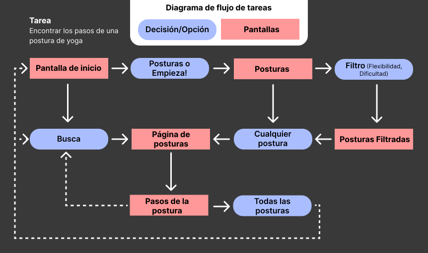

Anvaya
Una enciclopedia de posturas de yoga/pilates: clara, sencilla y sin tonterías.
Problema: La mayoría de las plataformas actuales de yoga y pilates se sienten anticuadas, demasiado clínicas o centradas solo en una práctica. Rara vez reflejan el estilo de vida moderno de bienestar ni las expectativas estéticas de usuarios que valoran un diseño limpio, elegante y experiencias personalizadas. Los usuarios a menudo deben cambiar entre varias aplicaciones y carecen de la capacidad para filtrar por nivel de dificultad, flexibilidad o grupo muscular, lo que dificulta construir una rutina consistente y personalizada.
Solución: Una aplicación web que integra posiciones de yoga y pilates en una experiencia coherente y relajante. Diseñada con una estética natural y sofisticada, la plataforma está dirigida a usuarios que ven el bienestar como un estilo de vida. Los usuarios pueden filtrar por práctica, grupo muscular, dificultad y flexibilidad. Cada posición incluye visuales claros y una guía paso a paso, facilitando la exploración y profundización en su práctica a su propio ritmo.
Herramientas Figma, Adobe
Plazo 3 semanas
Rol Investigación, Branding, Diseño UX/UI, Prototipado, Pruebas de usabilidad

El Plan
Resumen del proyecto
El cliente ha solicitado el diseño de una aplicación web que funcione como una referencia curada y moderna de posiciones de yoga y pilates, con filtros especiales. El objetivo es crear una experiencia elegante, serena e intuitiva, dirigida a una audiencia exigente que valora el bienestar como un estilo de vida, no solo una rutina.
Visión y tono del cliente
El tono e identidad visual del sitio deben reflejar la energía aspiracional de marcas como Skims, Equinox y Uber Black: accesible en cuanto a facilidad de uso, pero exclusiva en diseño y sensación. La interfaz debe ser limpia y orgánica, evitando colores fuertes o elementos recargados, pero manteniendo una apariencia natural, terrenal y contemporánea.
Características principales
Biblioteca de posiciones:
Una base de datos completa de posiciones de yoga y pilates, cada una con:
- Guía paso a paso
- Información sobre el grupo muscular objetivo
- Notas para una correcta ejecución
Filtrado avanzado por:
- Disciplina (Yoga / Pilates)
- Grupo muscular
- Nivel de dificultad
- Requerimiento de flexibilidad
Escalabilidad futura (consideraciones para fases posteriores):
- Posibilidad de crear secuencias o flujos personalizados
- Recomendaciones personalizadas según el nivel o áreas de enfoque del usuario
- Integración con contenido relacionado al estilo de vida wellness (ej. ejercicios de respiración, meditaciones, etc.)
Análisis de la competencia

Flujo de tareas
Con el análisis de competidores finalizado y los requisitos del cliente claramente definidos, comencé a centrarme en qué acciones realizaría un usuario y en qué orden. Al mapear los flujos de tareas, pude empezar a definir los recorridos principales que los usuarios experimentarían, como explorar posiciones, filtrar por área de enfoque o aprender a ejecutar una postura.

Diseño visual
Comienzo del diseño: mood board

Wireframe
Con la visión aclarada, el moodboard finalizado y los flujos de tareas mapeados, tenía todo lo necesario para comenzar a crear los wireframes. Esta fase me permitió traducir tanto la dirección visual como el recorrido del usuario en diseños estructurados, asegurando que cada pantalla facilitara una navegación intuitiva y reflejara la experiencia fluida y sofisticada que el cliente tenía en mente.

Prototipo
Proceso de iteración
Después de diseñar los wireframes iniciales, pasé a la fase de prototipado, enfocándome en la página de Detalles de la postura. Esta sección pasó por varias iteraciones basadas en la retroalimentación y pruebas de usabilidad. Cada versión exploró diferentes estructuras de diseño, prioridades de contenido y preferencias de los usuarios, lo que me ayudó a perfeccionar el equilibrio entre claridad, funcionalidad y atractivo visual.

Iteración 1
En mi primer prototipo, los usuarios comentaron que el diseño se sentía muy ajustado, especialmente con posturas complejas y textos largos, además de que la estructura general resultaba visualmente abrumadora en pantallas pequeñas.

Iteración 2
Quité las vistas previas izquierda y derecha y añadí una barra lateral de “Posturas similares” para reducir el desorden, pero muchos usuarios prefirieron el flujo de la primera versión y notaron que la ubicación del grupo muscular se sentía desconectada.

Iteración 3
Refiné el diseño de la Iteración 1 mejorando espacios, reposicionando el ícono del grupo muscular y la jerarquía visual, pero aún faltaba una forma clara de regresar a la lista completa y una guía visual paso a paso para apoyar a aprendices visuales y no angloparlantes.

Última iteración
Prioricé la claridad y accesibilidad. Implementé guías visuales detalladas para hacer más claro el proceso, y agregué el botón “Volver a todas las posturas” para una navegación más fluida. Los ajustes en el diseño aseguraron que la página se mantuviera limpia y legible.
Prototipo de Alta fidelidad
Con todas las páginas principales refinadas mediante iteraciones y retroalimentación de usuarios, desarrollé un prototipo de alta fidelidad que da vida a toda la experiencia de la aplicación. Desde explorar las posturas hasta consultar instrucciones detalladas, cada pantalla fue diseñada para ser intuitiva, accesible y visualmente alineada con la estética relajante de la app. Este prototipo final refleja un flujo fluido que acompaña a los usuarios en cada paso de su práctica.

Reflexión
Reflexiones finales
Trabajar en Anvaya me enseñó lo esencial que es comprender realmente al público objetivo desde el inicio. Crear una plataforma de bienestar que se sintiera a la vez premium y accesible requirió equilibrar un diseño sofisticado con una funcionalidad intuitiva. Aprendí que iterar a partir de comentarios reales de los usuarios, especialmente en funciones complejas como el filtrado y las instrucciones de posturas, marca la diferencia entre un concepto que solo luce bien y uno que realmente funciona. Este proyecto reforzó la importancia de diseñar pensando en la accesibilidad y en los aprendices visuales, asegurando que la experiencia sirva a todas las personas que quieran profundizar en su práctica.
Consideraciones de accesibilidad
Apoyo al aprendizaje visual: Incorporé ilustraciones paso a paso para cada postura, permitiendo que las personas visuales y quienes no hablan inglés comprendan la forma correcta sin depender únicamente del texto.
Navegación clara: Diseñé filtros intuitivos y añadí botones destacados para que los usuarios puedan cambiar fácilmente entre posturas y volver a la vista general.
Diseño relajante: Utilicé colores suaves y naturales, junto con espacios en blanco generosos, para crear una experiencia tranquila que reduce la carga cognitiva y favorece una práctica consciente.